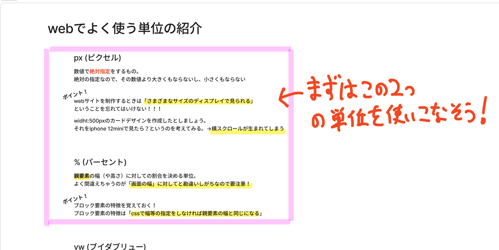
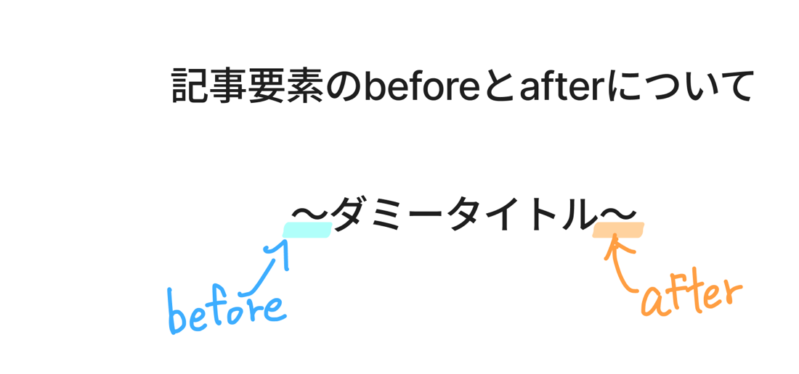
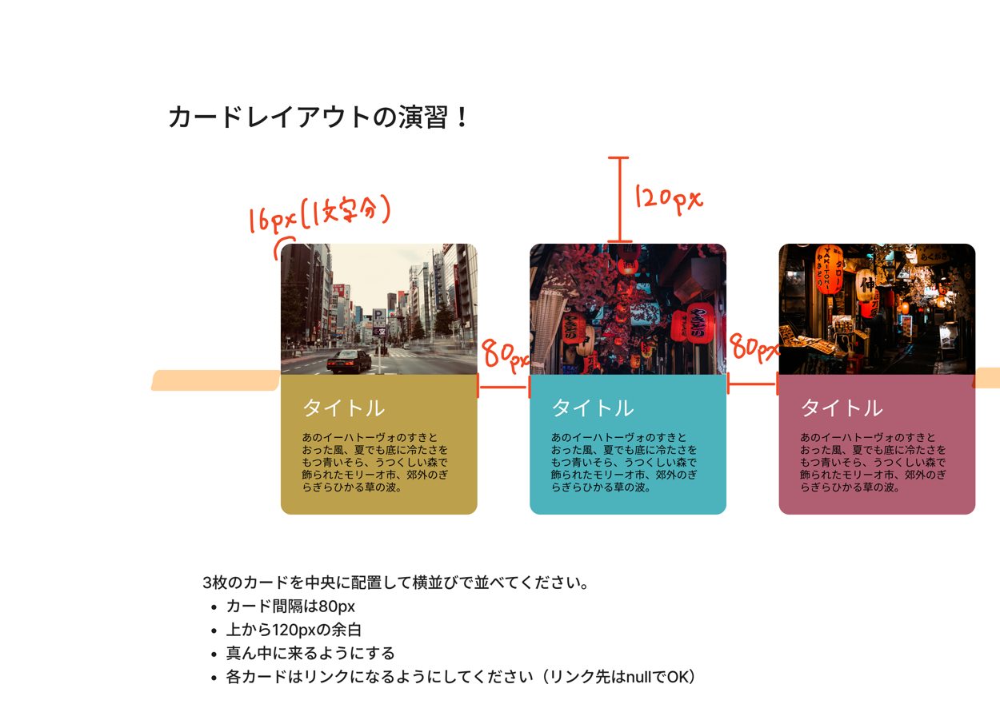

訓練校 IT スクール｜全6時間の集中授業
テーマは 「CSSの単位」「レスポンシブ（メディアクエリ）」「リンク・ボタン」「疑似クラス／疑似要素」。
かんたんに言うと 「まずは px と % の2つを使いこなす」「@media で画面幅ごとにCSSを切り替える」「:hover や :active で動きをつける」「::before / ::after は飾り専用（content必須）」という、盛りだくさんの日です。
| 時刻 | 内容 | 大事さ |
|---|---|---|
| 00:04 | CSSの単位（px/%/vw/vh/em/rem） | ★★★ |
| 00:28 | 画面いっぱい画像（3点セット） | ★★★ |
| 00:41 | max-width / min-width | ★★★ |
| 01:02 | メディアクエリ・ブレイクポイント | ★★★ |
| 01:12 | モバイルファースト・半角スペース注意 | ★★★ |
| 01:33 | リンク（aタグ・href・target） | ★★★ |
| 02:08 | @charset "UTF-8"; ・中央寄せ | ★★ |
| 02:22 | ボタンリンク作成（タップ44px） | ★★★ |
| 02:31 | お昼休憩 | — |
| 03:21 | :active で押し込みアニメ | ★★★ |
| 03:30 | :hover（スマホでは効かない） | ★★★ |
| 03:33 | opacity / box-shadow | ★★ |
| 03:56 | リスト（ul/ol/li） | ★★ |
| 04:35 | ::before / ::after 疑似要素 | ★★★ |
| 05:24 | 授業終了 | — |
この2つを使いこなせば大体作れる。
画面幅じゃなく親要素。1rem=16px。
width:100%+height:100vh+object-fit:cover。
width:100% + max-width:1200pxが定番。
@media screen and (max-width: 768px)
screen and (...)の空白忘れが最頻ミス。
aタグ・href・target="_blank"（外部別タブ）。
margin: 0 autoで要素中央。
:active（押下）/ :hover（カーソル乗）。
::before/::after は content 必須。飾り専用。
先生の板書に赤い手書きで 「まずはこの2つ（px と %）を使いこなそう！」とありました。px と % が基本。vw/vh/em/rem は次のステップ。
| 単位 | 基準 | 特徴 |
|---|---|---|
| px | 絶対値 | 拡大も縮小もしない。ボタンなど縮むと困る所に |
| % | 親要素の幅 | ※画面幅ではなく親要素。よく勘違いする所 |
| vw / vh | 画面幅 / 高さ | 100vwはスクロールバー分はみ出る注意 |
| em / rem | フォントサイズ | 1rem = 16px。余白を「○文字分」で指定したい時に便利 |
親が500pxで子が90%なら → 500×0.9＝450px。HTMLのデフォルト文字サイズは16pxなので 1rem=16px。

メインビジュアルを画面いっぱいに表示する定番3点セット。
* { margin: 0; } /* bodyのデフォルト余白を消す */ img { display: block; /* インライン下の隙間を消すおまじない */ width: 100%; height: 100vh; /* 画面の高さいっぱい */ object-fit: cover; /* ゆがめずトリミング */ }
imgはインラインなのに幅高さ指定OKの特例。display:blockは「下の隙間を消すおまじない」の意味合いが強い。
width: 100% ＋ max-width: 1200px → スマホでは画面いっぱい、大画面でも1200pxで止まる。最初はこのコンビを覚えれば十分。
.container { width: 100%; max-width: 1200px; /* これ以上大きくならない */ }
教科書83p。画面幅に応じてCSSを切り替える＝レスポンシブの王道。
@media screen and (max-width: 768px) { .container { flex-direction: column; } }
screen and (max-width:...) のスペースがないと動きません。毎回ハマる人がいます。
max-width: 768px＝768px以下に適用（PCから作りスマホ上書き）min-width: 1200px＝1200px以上に適用（モバイルファースト＝スマホから作る）<a href="https://example.com" target="_blank">外部リンク</a> <a href="#">仮リンク（ヌルリンク）</a>
href＝飛び先（imgのsrcとは違う）href="#"＝ヌルリンク（リンク先なし・仮置き）target="_blank"＝別タブで開く（主に外部リンク）.button-link:active { border-bottom: none; transform: translateY(4px); /* 4px沈む */ }
下線を消す＋transformで沈める → ボタンを押し込んだ動きに。
カーソルが乗った時の指定なのでスマホ（タッチ）では反応しない。PC向けの装飾。普通に :hover と書いてOK（スマホでは自然に無視）。
opacity＝要素全体の透明度（0〜1）。RGBAは「色」だけの透明度、opacityは要素まるごと。
.card { box-shadow: 2px 2px 9px #999; } /* X方向 Y方向 ぼかし 色 */
box-shadow＝影。1つ目X・2つ目Y・3つ目ぼかし量・4つ目色。border-radiusと組むと今どきのカードに。
ul { list-style: none; } /* 黒丸を消す */
ul/ol はブラウザが勝手に margin/padding を付けるのでリセットして調整。
CSSから疑似的に飾りの要素を作る仕組み。テキストの前後に飾り線やアイコンを付ける時に使います。あくまで飾りなので選択・コピーできません。
.title::before { content: ""; /* ← 必須！空でもOK */ background: url(../img/icon.png); background-repeat: no-repeat; }
::before / ::after は必ず content を書く（空文字 "" でもOK）。これが無いと表示されません。::before＝要素の前、::after＝要素の後ろ。背景画像が小さいとタイル状に繰り返すので background-repeat: no-repeat、位置は background-position で。

::before（青）、後ろの飾り＝::after（オレンジ）。本文ではなくCSSで足した飾り| 操作 | 結果 |
|---|---|
a*3 + Tab | aタグを3つ展開 |
ul>li*3 + Tab | ulの中にli3つ |
h2+ul>li*3 + Tab | h2と（兄弟に）ul>li*3 |
p40-20 + Tab | padding: 40px 20px; |
| Cmd/Ctrl/Alt + クリック | 複数カーソル（一括編集） |
アスタリスク（*）＝Shift+「け」（日本語キーボード）。プログラミングの掛け算記号。a*3＝「aを3つ」。
| 用語 | 意味 |
|---|---|
| px / % | 絶対値 / 親要素の幅に対する割合 |
| vw / vh | 画面の幅 / 高さ基準 |
| rem | ルート基準。1rem=16px |
| object-fit: cover | 比率を保ってトリミング |
| max-width / min-width | 最大幅 / 最小幅 |
| メディアクエリ | 画面幅でCSSを切り替える（@media） |
| ブレイクポイント | 切り替える画面幅の数値 |
| モバイルファースト | スマホから先に作る考え方 |
| aタグ / href / target="_blank" | リンク / 飛び先 / 別タブ |
| @charset "UTF-8"; | CSS1行目に書く文字コード宣言 |
| margin: 0 auto | 左右autoで要素を中央寄せ |
| :active / :hover | 押下中 / カーソル乗った時の疑似クラス |
| opacity | 要素全体の不透明度（0〜1） |
| box-shadow | 影（X / Y / ぼかし / 色） |
| ::before / ::after | CSSで作る飾りの疑似要素（content必須） |
| Emmet | VSCodeの省略記法（a*3 でタブ展開） |
width:100% + max-width:1200px のコンビ@charset "UTF-8";
% は画面幅じゃなくて親要素。よく間違える。あくまでも親要素です。
まず px と % が使いこなせれば大体のものを作れる。こっから先は次のステップでいい。
screen and (...) の半角スペースを入れてください。これがないと動かないです。めちゃくちゃよくあるミス。ブレイクポイントの数字に最適解はない。常に変動する。
疑似要素はあくまで装飾なので選択できない。詰まるところやっぱり装飾なんでね。